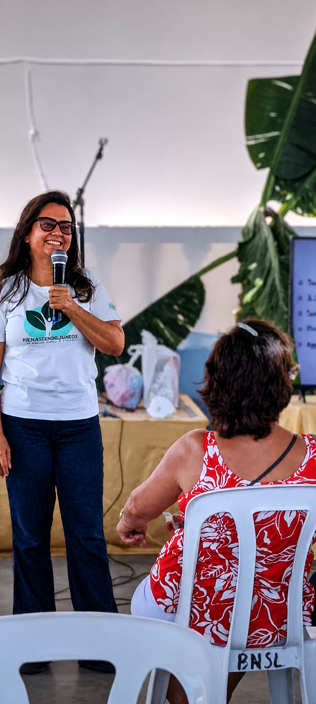
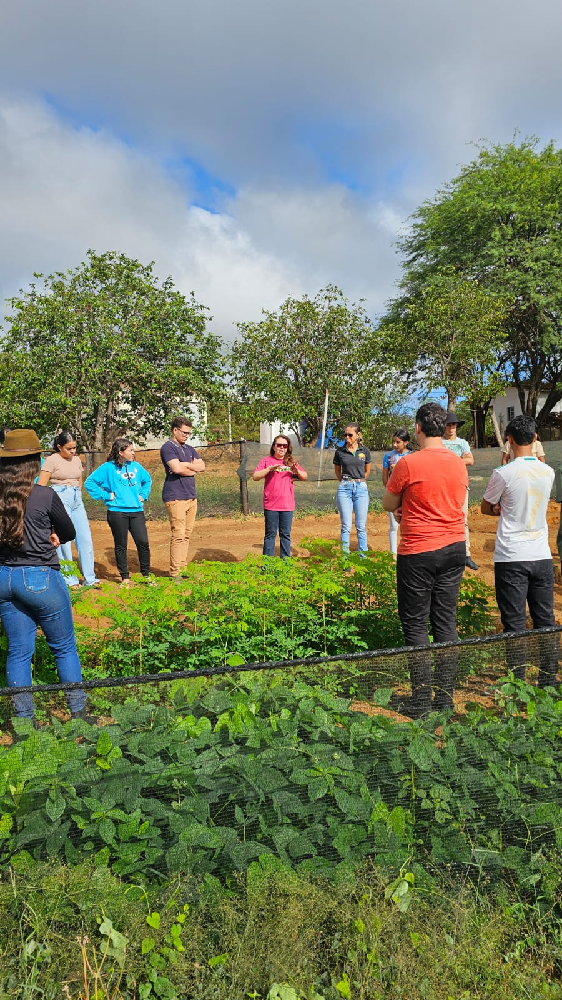
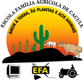
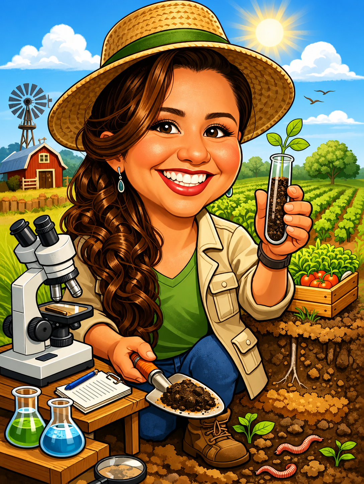

Nossa História
O Orgânico Inteligente nasceu da necessidade de promover a capacitação de agricultores, estudantes, técnicos e professores, aliando ensino, pesquisa e extensão ao desenvolvimento de tecnologias sociais de baixo custo voltadas ao fortalecimento da produção orgânica. O programa surgiu com o propósito de construir, de forma participativa e dialogada, a integração entre o conhecimento científico e os saberes tradicionais, valorizando as experiências das comunidades e incentivando práticas sustentáveis no campo e na cidade.
Sua trajetória teve início oficialmente em 3 de outubro de 2016, com a assinatura do Termo de Outorga no Conselho Nacional de Desenvolvimento Científico e Tecnológico – CNPq, por meio do Projeto Núcleo de Agroecologia e Produção Orgânica. A partir desse marco, o programa passou a desenvolver ações voltadas à promoção da agricultura orgânica e agroecológica, fortalecendo a articulação entre instituições de ensino, agricultores familiares e comunidades.
Desde sua criação, o Orgânico Inteligente atua na ampliação da oferta de alimentos saudáveis, no fortalecimento da segurança alimentar e nutricional e na geração de renda para famílias agricultoras. O programa apoia processos de transição para sistemas produtivos mais sustentáveis, resilientes e economicamente viáveis, em conformidade com a Lei nº 10.831/2003, que regulamenta a produção orgânica no Brasil.
Atualmente, o Orgânico Inteligente conta com uma equipe formada por mais de 10 integrantes, entre estudantes, pesquisadores, técnicos e professores, que desenvolvem atividades integradas de pesquisa, ensino e extensão. As ações realizadas envolvem capacitações, desenvolvimento de tecnologias sustentáveis, produção científica, assistência técnica, oficinas, cursos e projetos voltados ao fortalecimento da agricultura orgânica e agroecológica.
Ao longo de sua trajetória, o Orgânico Inteligente consolidou-se como um espaço de formação, inovação e transformação social, incentivando práticas produtivas que respeitam o meio ambiente, valorizam a agricultura familiar e promovem qualidade de vida para produtores e consumidores.
Fortalecer a produção orgânica no Sertão Produtivo e na Bahia a partir das novas tecnologias de baixo custo criadas com ciência e sabedoria popular.
Ser referência em produção orgânica e desenvolvimento rural sustentável na Bahia.
Sustentabilidade, solidariedade, conhecimento e respeito à terra, às pessoas e aos animais.
Conectando Instituto Federal, campo e comunidade
O Orgânico Inteligente é um programa de ensino, pesquisa e extensão voltado ao fortalecimento da agricultura orgânica e agroecológica no semiárido baiano. O programa atua diretamente no território do Sertão Produtivo da Bahia, no Território de Identidade do Sudoeste Baiano, com destaque para o município de Guajeru, e também no Território Velho Chico, especialmente em Igaporã. Essas regiões são marcadas pela forte presença da agricultura familiar, pela irregularidade das chuvas, pela resistência do povo sertanejo e pela riqueza cultural e ambiental.
O programa desenvolve ações junto a agricultores e agricultoras familiares, promovendo a transição do modelo convencional para sistemas agroecológicos sustentáveis até a conquista da certificação orgânica. As atividades incluem assistência técnica, capacitações, certificação participativa, desenvolvimento de tecnologias de baixo custo, pesquisa aplicada e apoio ao acesso a mercados institucionais e programas governamentais, como o Programa de Aquisição de Alimentos e o Programa Nacional de Alimentação Escolar.
A metodologia do Orgânico Inteligente parte das necessidades reais enfrentadas pelos agricultores, buscando soluções práticas e cientificamente fundamentadas que tornem os sistemas produtivos mais sustentáveis, resilientes e economicamente rentáveis. O programa também incentiva a valorização dos saberes tradicionais e da biodiversidade regional, fortalecendo a autonomia das famílias agricultoras.
Além disso, o Orgânico Inteligente integra estudantes, professores, pesquisadores, extensionistas e comunidades rurais em uma rede colaborativa de construção do conhecimento. Essa interação promove formação acadêmica, inovação no campo e geração de impactos concretos na qualidade de vida das pessoas, no fortalecimento da agricultura familiar e na conservação do meio ambiente no semiárido baiano.


Quem é Felizarda Bebé?
Natural de Candiba, uma pequena cidade do interior da Bahia com cerca de 14 mil habitantes, é filha de agricultores familiares e cresceu em um ambiente marcado pelo trabalho, pela fé e pelo compromisso com a comunidade. Desde a infância, destacou-se pela participação ativa na igreja católica, pela liderança comunitária e pelo excelente desempenho escolar no Colégio Municipal Dom José Pedro Costa, onde recebeu o prêmio de melhor aluna da 8ª série.
Após concluir o curso de Magistério, mudou-se para Vitória da Conquista, onde se formou em Agronomia. Em seguida, foi para Recife para cursar mestrado e doutorado na Universidade Federal Rural de Pernambuco, destacando-se pelo excelente desempenho acadêmico, com conceito máximo (A) em todas as disciplinas.
Em 2008, foi aprovada em concurso público para professora substituta do Instituto Federal de Pernambuco – Campus Santo Antão. Em 2009, conquistou aprovação nos concursos do Instituto Agronômico de Pernambuco e do Instituto Federal Baiano, assumindo como docente do Campus Guanambi em abril de 2010.
Atualmente, é professora titular do Instituto Federal Baiano – Campus Guanambi, além de atuar nos programas de mestrado em Ciências Ambientais, no Campus Serrinha, e em Produção Vegetal no Semiárido, no Campus Guanambi. Sua trajetória acadêmica é marcada por uma produção científica expressiva, com mais de 146 publicações entre artigos e resumos científicos, além da coordenação de mais de 50 projetos de pesquisa e extensão aprovados em instituições federais, como Conselho Nacional de Desenvolvimento Científico e Tecnológico, Ministério do Desenvolvimento Agrário e Agricultura Familiar e Ministério da Agricultura e Pecuária, e estaduais, como a Fundação de Amparo à Pesquisa do Estado da Bahia e IF Baiano (Proex e PROPES).
Ao longo da carreira, já orientou mais de 130 bolsistas de graduação e pós-graduação, consolidando uma ampla atuação na área de Agricultura Orgânica no estado da Bahia. Seu trabalho tem impactado diretamente agricultores e comunidades rurais de municípios como Candiba, Guanambi, Caetité, Caculé, Guajeru e Pindaí.
Entre as iniciativas de destaque está o Programa Orgânico Inteligente em que gerou vários resultados com 44 agricultores certificados e entre eles o "Sítio Gameleira – Comida da Roça", que faz um serviço de entrega de alimentos orgânicos no formato delivery, fortalecendo a agricultura familiar e promovendo alimentação saudável na região.
📄 Currículo LattesAções que transformam o campo
Do laboratório à roça, desenvolvemos atividades que fortalecem a produção orgânica e a vida no campo.
Produção Orgânica
Desenvolvemos pesquisas sobre manejo de solo, controle biológico de pragas, melhor cobertura de solo, bioinsumos de baixo custo e criativo, compostagem e sistemas produtivos adaptados ao Semiárido baiano.
Extensão Rural
Levamos conhecimento técnico diretamente às propriedades rurais oriundos dos resultados de nossas pesquisas, com duas visitas semestrais, acompanhamento e suporte contínuo às famílias agricultoras. Além disso, fornecemos mudas de hortaliças para os agricultores orgânicos.
Oficinas e Capacitações
Realizamos cursos, palestras, oficinas, dias de campo sobre agricultura orgânica, manejo do solo e do agrossistema orgânico, compostagem, irrigação de baixo custo e muito mais.
Certificação Orgânica
Apoiamos a certificação participativa desde a criação de grupos e núcleo até o acesso a mercados diferenciados e melhores preços pelo produto orgânico.
Saiba maisTecnologias Sociais
Desenvolvemos e difundimos tecnologias de baixo custo adaptadas à realidade do Sertão: tratamento das águas cinzas, composteiras e sistemas de captação de água.
Feiras Orgânicas
As feiras são realizadas semanalmente conectando produtores orgânicos diretamente com os consumidores, valorizando o alimento saudável e garantindo renda familiar.
Impacto em todo o Sertão Produtivo
Nossa atuação abrange municípios do Território do Sertão Produtivo, levando agroecologia e transformação social.
📌 Municípios Atendidos
O que dizem nossos agricultores
Histórias reais de transformação e esperança no Sertão Produtivo.
"O Orgânico Inteligente transformou a minha vida. Antes eu morava em São Paulo e, quando cheguei à Bahia, foi através do programa que encontrei novas oportunidades e consegui melhorar minha qualidade de vida. Hoje tenho um restaurante na roça e estou me preparando para abrir outro na cidade, utilizando os alimentos orgânicos que produzo. A cada dia me sinto mais feliz e realizada por fazer parte do Orgânico Inteligente."
"O orgânico inteligente, para mim, para nós aqui em casa, foi muito importante. Nos ajudou a melhorar as nossas técnicas de manejo, ensinou a gente como plantar, como irrigar corretamente, a época certa de fazer o plantio. O orgânico inteligente também nos ajudou a vender. Então, para nós, o orgânico inteligente foi muito bom, tanto economicamente quanto ambientalmente."
"As oficinas do projeto mudaram minha visão. Aprendi que a terra é um ser vivo e que cuidar dela com respeito é cuidar de mim e dos meus filhos. A agroecologia é o caminho."
Conteúdos Educativos
Materiais gratuitos para agricultores, estudantes e técnicos interessados em agroecologia.
Panorama da produção orgânica no Estado da Bahia (2014–2023)
Visão geral e atualizada da produção orgânica na Bahia ao longo de uma década, com dados sobre evolução, municípios e desafios do setor.
Abrir PDF →Cenário da agricultura familiar no Território Sertão
Caracteriza a agricultura familiar em Candiba-BA, destacando pequenas propriedades, acesso a políticas públicas, desafios de assistência técnica e o papel econômico e alimentar da produção familiar.
Abrir PDF →Extensão rural agroecológica no Território Sertão Produtivo
Relata ações do Programa Orgânico Inteligente em oficinas, palestras, feiras e atividades de difusão agroecológica em municípios do Sertão Produtivo.
Abrir PDF →Agenda do Orgânico Inteligente
Eventos, visitas, feiras e capacitações — o que está por vir no Sertão Produtivo.
Stand do Orgânico Inteligente com exposição de produtos, materiais educativos e divulgação do programa.
StandPalestra aberta sobre produção orgânica, bioinsumos e transição agroecológica para agricultores e comunidade local.
PalestraStand do Orgânico Inteligente e palestra da Profa. Dra. Felizarda Bebé sobre agroecologia e sustentabilidade no semiárido.
Stand · PalestraVisitas técnicas semanais às propriedades dos agricultores orgânicos para acompanhamento, troca de saberes e assistência técnica.
RecorrenteFeira itinerante semanal conectando produtores orgânicos certificados diretamente aos consumidores. Local divulgado nas redes sociais.
RecorrenteCurso de Formação Inicial e Continuada sobre agroecologia, bioinsumos, certificação e manejo orgânico para agricultores e interessados.
CapacitaçãoGrande mobilização agroecológica levando o Orgânico Inteligente ao Território de Irecê, com feiras, palestras e intercâmbio entre agricultores.
Em breveQuem nos apoia
Uma rede de instituições comprometidas com o desenvolvimento sustentável do Sertão.
CNPq
Conselho Nacional de Desenvolvimento Científico e Tecnológico, financiando bolsas e projetos de pesquisa em agricultura orgânica.
FAPESB
Fundação de Amparo à Pesquisa do Estado da Bahia, apoiando projetos de extensão e pesquisa aplicada ao campo baiano.
MDA
Ministério do Desenvolvimento Agrário, fortalecendo políticas públicas para a agricultura familiar e a transição agroecológica.
MAPA
Ministério da Agricultura, Pecuária e Abastecimento, regulamentando e fomentando a produção orgânica no Brasil.
Povos da Mata
Organização que representa comunidades rurais e povos tradicionais, promovendo soberania alimentar e manejo sustentável.
Prefeituras
Gestões municipais do Sertão Produtivo parceiras na articulação local, apoio logístico e acesso às famílias agricultoras.
CASA
Centro de Agricultura Alternativa, referência em agroecologia e tecnologias sociais para o semiárido e regiões de transição.
COOTRAF
Cooperativa dos Trabalhadores da Agricultura Familiar, articulando a comercialização e o acesso a mercados para os produtores orgânicos.
Instituto Brasil Orgânico
Organização nacional dedicada ao fortalecimento da cadeia produtiva orgânica no Brasil, promovendo certificação, mercado e políticas públicas para o setor.

EFA Caculé
Escola Família Agrícola de Caculé, formando jovens rurais por meio da Pedagogia da Alternância e fortalecendo a agricultura familiar no semiárido baiano.
Entre em contato
Tem dúvidas, quer participar ou propor uma parceria? Estamos aqui.
